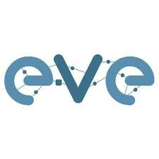
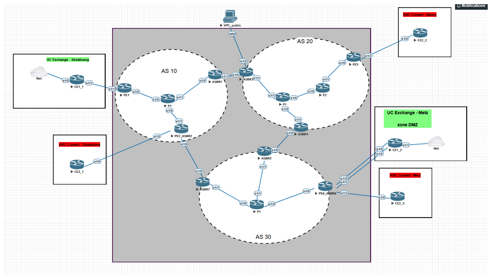

Résumé de la SAESAE Summary
Au cours de cette SAE, nous devions réaliser une infrastructure réseau multi-sites complexe sous l'émulateur EVE-NG. L'objectif était de répondre à un appel d'offre pour deux entreprises clientes (UC Exchange et ABC Conseil). L'infrastructure globale intègre 3 parties majeures :During this SAE, we had to create a complex multi-site network infrastructure using the EVE-NG emulator. The goal was to respond to a call for tenders for two client companies (UC Exchange and ABC Conseil). The overall infrastructure integrates 3 major parts:
- Une partie centrale type A central "Fournisseur d'Accès Internet" (FAI)"Internet Service Provider" (ISP) comportant 3 Systèmes Autonomes (AS) et assurant le routage avancé via les protocoles part comprising 3 Autonomous Systems (AS) and ensuring advanced routing via BGP, OSPF, RIP et MPLSBGP, OSPF, RIP, and MPLS. protocols.
- Une partie A LAN simulant les réseaux locaux hiérarchiques des différents sites géographiques des entreprises. part simulating the hierarchical local networks of the companies' different geographic sites.
- Une partie A Services intégrant le déploiement sécurisé des serveurs d'entreprise (DNS, DHCP, Web, Mail, Active Directory). part integrating the secure deployment of enterprise servers (DNS, DHCP, Web, Mail, Active Directory).
Environnement et OutilsEnvironment and Tools

EVE-NG
Émulateur de réseau virtuel professionnel utilisé pour simuler l'ensemble de la topologie multi-sites, incluant les routeurs et les machines virtuelles.Professional virtual network emulator used to simulate the entire multi-site topology, including routers and virtual machines.
Équipements Cisco Cisco Equipment
Configuration avancée en ligne de commande de l'IOS Cisco sur les routeurs (CE, PE, P, ASBR) pour le routage BGP/OSPF/RIP et MPLS.Advanced command-line configuration of Cisco IOS on routers (CE, PE, P, ASBR) for BGP/OSPF/RIP and MPLS routing.
Debian Linux
Création et administration des VM pour la zone DMZ hébergeant les services d'entreprise (Apache, Bind9, Postfix/Dovecot).Creation and administration of VMs for the DMZ zone hosting enterprise services (Apache, Bind9, Postfix/Dovecot).
Windows Server Windows Server
Déploiement du serveur DNS primaire et mise en place du service d'annuaire Active Directory pour la gestion du domaine.Deployment of the primary DNS server and implementation of the Active Directory directory service for domain management.
Livrables et DocumentationsDeliverables and Documentation
Le travail a été documenté en 3 parties distinctes correspondant à la répartition technique du projet :The work was documented in 3 distinct parts corresponding to the technical division of the project:
Documentation FAI (Cœur de réseau)ISP Documentation (Core Network)
Documentation LAN (Réseau d'entreprise)LAN Documentation (Enterprise Network)
Documentation Services (DMZ & Serveurs)Services Documentation (DMZ & Servers)
Mon rôle principal dans ce projet s'est concentré sur la conception et la configuration de la partie My main role in this project focused on the design and configuration of the Fournisseur d'Accès Internet (FAI)Internet Service Provider (ISP). J'ai été chargé de réaliser le cœur de réseau permettant d'interconnecter de manière sécurisée et isolée les différents sites géographiques de nos clients. part. I was tasked with creating the core network to securely and isolatedly interconnect our clients' various geographic sites.

Missions techniques réalisées sur la partie FAI :Technical missions carried out on the ISP part:
- Déploiement du routage IGP (RIP et OSPF) au sein des 3 Systèmes Autonomes.Deployment of IGP routing (RIP and OSPF) within the 3 Autonomous Systems.
- Configuration de la commutation de labels Configuration of MPLS au cœur des AS pour optimiser le transit. label switching at the core of the AS to optimize transit.
- Mise en place de Implementation of Route Reflectors (RR) pour optimiser le maillage BGP intra-AS. to optimize the intra-AS BGP mesh.
- Isolement strict des clients via l'utilisation de tables de routage virtuelles Strict isolation of clients using Virtual Routing and Forwarding (VRF) sur les routeurs Provider Edge (PE). tables on Provider Edge (PE) routers.
- Gestion de la redondance et du failover entre AS en cas de coupure matérielle (BGP Additional-paths).Management of redundancy and failover between AS in case of hardware failure (BGP Additional-paths).
- Mise en place d'un Setup of a NAT statiquestatic NAT sur un ASBR pour exposer un serveur web privé vers l'internet public. on an ASBR to expose a private web server to the public internet.
Grandes étapes du projetMain project steps
1. Conception et Adressage1. Design and Addressing
Analyse du cahier des charges, répartition des tâches, création des plans d'adressage IP (VLSM) pour les LANs et le FAI, et déploiement de la topologie sous EVE-NG.Analysis of specifications, task distribution, creation of IP addressing plans (VLSM) for LANs and the ISP, and deployment of the topology in EVE-NG.
2. Administration LAN2. LAN Administration
Configuration des commutateurs de chaque site : création des VLANs hiérarchiques, sécurisation avec MST (Multi Spanning Tree), et mise en place de la haute disponibilité via VRRP.Configuration of switches for each site: creation of hierarchical VLANs, securing with MST (Multi Spanning Tree), and implementing high availability via VRRP.
3. Interconnexion (FAI)3. Interconnection (ISP)
Ouverture de sessions BGP (iBGP et eBGP) et MP-BGP pour le transport des préfixes VPNv4. Définition des Route-Targets (RD/RT) pour sécuriser l'échange des routes clientes.Opening BGP (iBGP and eBGP) and MP-BGP sessions for transporting VPNv4 prefixes. Definition of Route-Targets (RD/RT) to secure the exchange of client routes.
4. Déploiement des Services4. Service Deployment
Installation et sécurisation des machines virtuelles (Debian/Windows) dans la zone DMZ. Configuration des serveurs DNS (avec transfert de zone), Web (Apache), Mail et Active Directory.Installation and securing of virtual machines (Debian/Windows) in the DMZ zone. Configuration of DNS (with zone transfer), Web (Apache), Mail, and Active Directory servers.
Compétences validéesValidated Skills
Ce projet s'inscrit au cœur du parcours Cybersécurité et valide les apprentissages suivants :This project is at the heart of the Cybersecurity track and validates the following learnings:
- AC21.01 Configurer et dépanner le routage dynamique dans un réseau (OSPF, RIP, BGP). Configure and troubleshoot dynamic routing in a network (OSPF, RIP, BGP).
- AC22.03 Mettre en place une connexion multi-site via un réseau opérateur (MPLS-VPN). Set up a multi-site connection via a carrier network (MPLS-VPN).
- AC24.02Cyber Mettre en œuvre les outils fondamentaux de sécurisation d’une infrastructure (VRF, listes de préfixes, NAT). Implement fundamental tools for securing an infrastructure (VRF, prefix lists, NAT).
- CE4.04 Travailler en équipe pour la réalisation d'une architecture complexe interconnectée. Work in a team to create a complex interconnected architecture.
Analyse réflexiveReflective Analysis
Au cours de ce projet, j'ai pu m'intégrer au centre d'un travail collaboratif simulant une infrastructure réseau de grande envergure. Celle-ci intègre de fortes problématiques de sécurité car on y voit plusieurs clients communiquant sur le même cœur de réseau (ce qui nécessite une stricte isolation via les VRF et le filtrage des routes). L'utilisation de l'émulateur EVE-NG fut parfois plus complexe que prévue au niveau des ressources matérielles, mais nous avons réussi à relever les défis techniques et à compléter l'intégralité du cahier des charges avec succès. During this project, I was able to integrate into the center of a collaborative effort simulating a large-scale network infrastructure. This involves significant security issues because several clients are communicating over the same core network (which requires strict isolation via VRFs and route filtering). The use of the EVE-NG emulator was sometimes more complex than expected in terms of hardware resources, but we managed to overcome the technical challenges and successfully complete all the specifications.